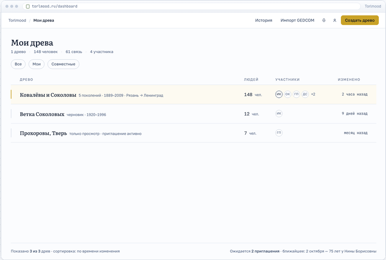
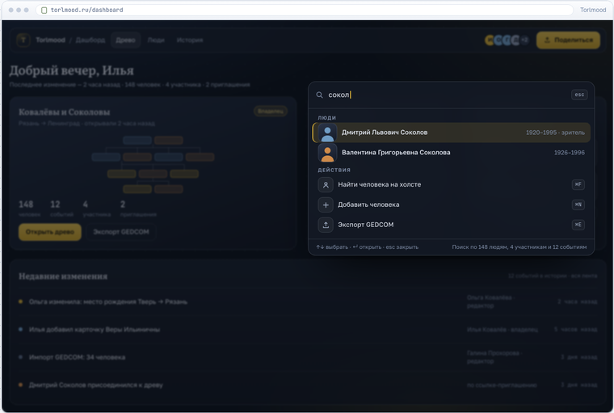
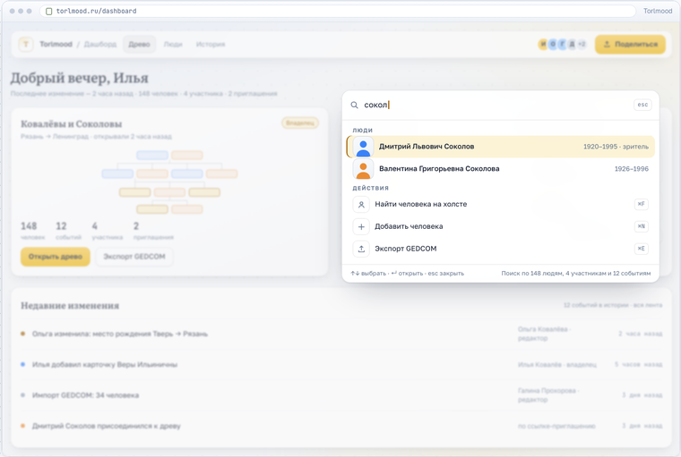
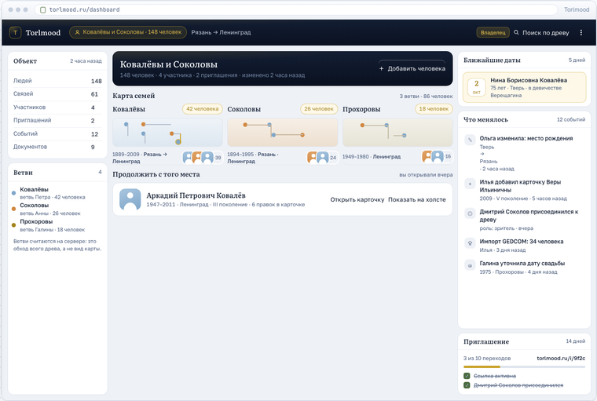
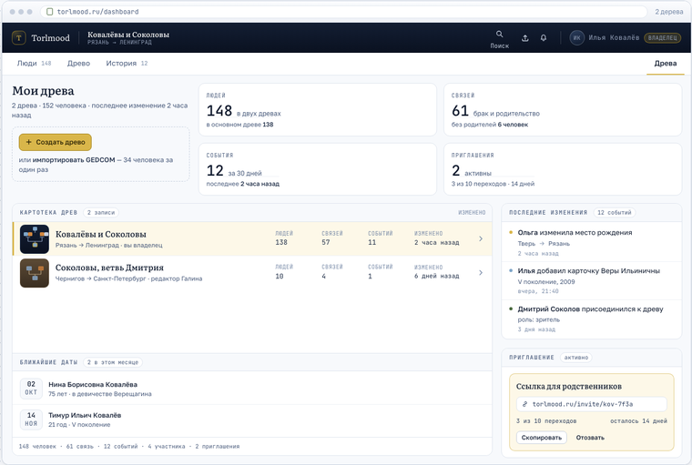
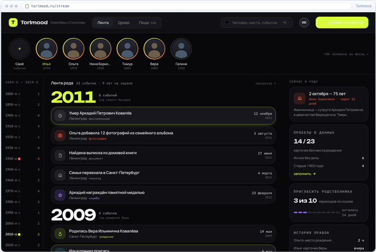

Тестовые страницы · октябрь 2026
Сейчас у Torlmood один интерфейс: тёмная обложка, строка хлебных крошек, холст с плавающей панелью и карточка человека отдельной страницей. Эти пять страниц — не косметические правки, а пять разных способов смотреть на продукт: типографика вместо рамок, тёмная мастерская, карта рода, плотная картотека и лента времени. В каждом варианте показаны десктоп и телефон.
Данные во всех вариантах одни и те же: древо «Ковалёвы и Соколовы», 148 человек, 4 участника, выбранный человек — Аркадий Петрович Ковалёв (1947–2011). Так варианты можно сравнивать построчно, а не по впечатлению.

Музейный каталог. У карточек нет теней и цветной заливки: только имя, годы и волосяные линии. Пол — узкая полоса слева, слева по холсту идёт линейка поколений.
Для спокойного чтения родословной
Тёмная мастерская: холст на весь экран, стеклянные панели, нижний док, инспектор справа и командная палитра ⌘K вместо хлебных крошек.
Для долгой работы с большим древом
Та же мастерская в светлой палитре: белые поверхности, стекло на тени и границе, тёмный янтарь вместо светлой латуни. Отдельная страница, чтобы сравнивать темы рядом.
Для работы днём и на солнце
Древо как карта: полосы поколений, навигатор-ветви вместо миникарты и подсветка пути от корня до человека — ответ на открытый вопрос про «линию от выбранного человека».
Для ориентации в 148 человеках
Плотный архивный указатель: слева таблица людей с фильтрами, справа досье с фактами, документами, событиями и историей правок. Моноширинные цифры, всё выровнено в столбцы.
Для поиска и точности данных
Лента времени вместо древа: год как главный герой, полоса историй с градиентными кольцами, карточки-сквирклы событий, рельс десятилетий слева и бенто-обзор. Другая пара шрифтов и кислотная палитра — ни на что прежнее не похоже.
Для пополнения: событие в три касанияПо строкам видно, что каждый вариант по-своему решает три задачи: как выглядит человек, как не потеряться в большом древе и что делать с телефона.
| Что сравниваем | A · Тихий архив | B · Холст-студия | C · Атлас рода | D · Картотека | E · Хроника |
|---|---|---|---|---|---|
| Идея | Музейный каталог: типографика и линии | Мастерская: холст и стеклянные панели | Карта рода: полосы поколений и путь | Архивный указатель: список и досье | Лента времени: род как поток событий |
| Главный экран | Список-таблица древ | Холст во весь экран | Поиск и путь от корня | Список людей + досье | Поток событий по годам |
| Как выглядит человек | Имя и годы, пол — полоса слевабез аватара и заливки | Тёмное стекло, кромка по полу, свечение при выделении | Медальон: годы слева от имени, кольцо у выбранного | Строка таблицы и плитка на холсте | Кольцо-история в полосе и чип внутри события |
| Как открыть человека | Отдельная страница: «Факты» и «События» в две колонки | Инспектор справа, не уходя с холста | Медальон + панели «Путь к человеку» и «Переезды рода» | Досье в мастере-детали, не уходя со списка | Полноэкранный профиль с таймлайном жизни |
| Навигация в большом древе | Линейка поколений I–V у левого края | Командная палитра ⌘K и поиск по людям | Навигатор-ветви, путь от корня, подсветка цепочки | Таблица с фильтрами «Мужчины / Женщины / Живые / Без дат» | Рельс десятилетий и годы-заголовки в ленте |
| Телефон | Залипающие чипы поколений, действия листом снизу | Холст во весь экран, док-пилюля, инспектор листом | Поиск первым экраном, «Моя ветвь», путь листом | Лента карточек с фильтрами и нижние вкладки | Полноэкранная лента, истории, нижний остров |
| Что решает лучше всего | Разреженность и «музейность»: древо читают, а не правят | Долгую работу: много правок, связи, экспорт | Ориентацию: где я, чья это ветвь, как я сюда попал | Поиск и точность: пробелы в датах, документы, история | Пополнение: событие добавляется в три касания |
| Чем платим | Суше и холоднее, меньше «тепла» семейного альбоматеряется нынешняя обложка | Тёмная тема на солнце, blur на слабых телефонах, инспектор тесен для длинных текстов | Подсветка пути и полосы поколений дороже по расчёту на больших древах | Таблица тесна на телефоне, плотность пугает неподготовленных родственников | У семей есть только имена и годы — лента вырождается в список; древо уходит на второй план |
Порядок, при котором решение принимается один раз и не переделывается дважды.
Откройте страницы на телефоне: все пять вариантов показывают мобильные экраны в рамке телефона. Половина правок в семейном древе делается с телефона, и разница между вариантами там заметнее, чем на десктопе.
Если ничего не менять — тоже ответ: значит, текущий интерфейс устраивает, и силы лучше вложить в функции из README: комментарии к карточкам, поиск по древу, подписки на изменения.
Палитра и токены — в globals.css (два слоя --p-* и @theme сохраняются), карточка и связи — в TreeCanvas.tsx, PersonNode.tsx, FamilyBusEdge.tsx, раскладка — в lib/layout.ts и lib/place.ts. Порядок и объём работ разобран в блоке «Как ложится на код» на странице каждого варианта.